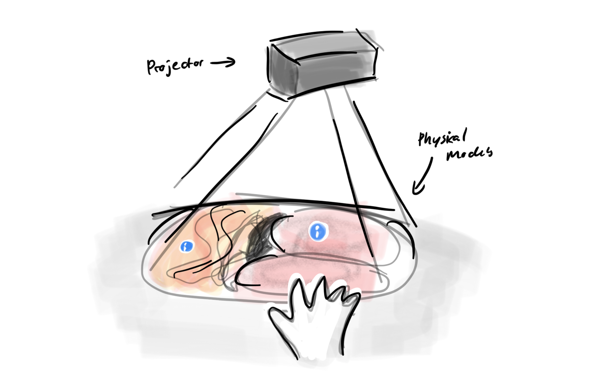
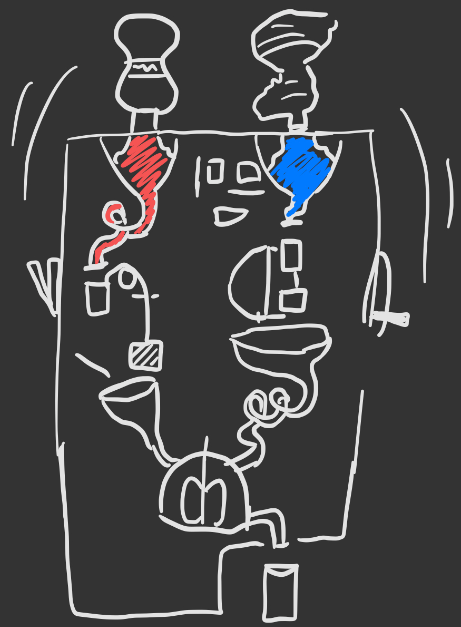
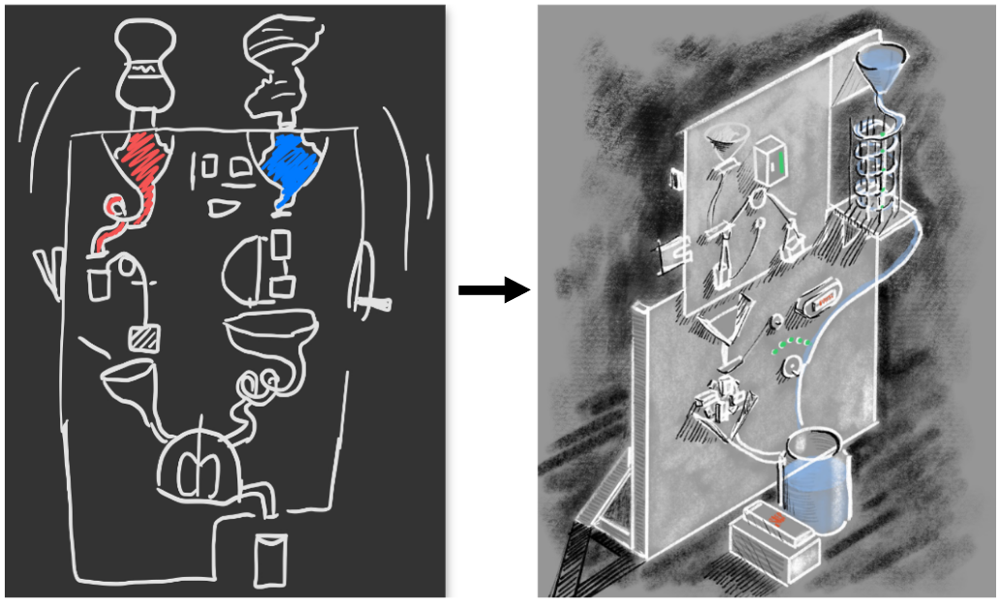
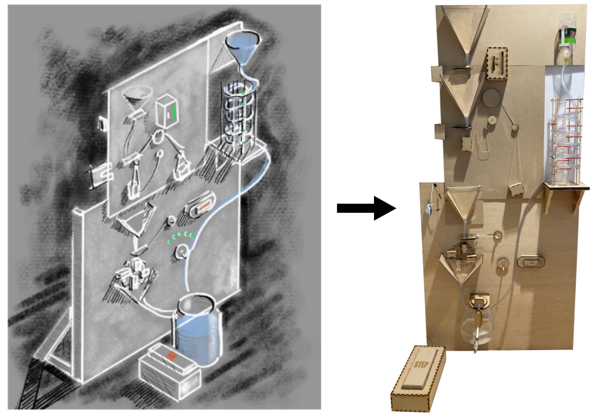

Prototypes & Projects
In this section I will be presenting all previous projects.
This could be anything from GUI'S, Wireframes,
Sketches, to full on projects.
Tangible and Embodied Interaction
Augmented Reality & Dissection
This project intended to research augmented reality used for anatomy teaching.
We intended to use a combination of existing augmented reality software with support for handheld
devices. Furthermore we created prototypes of simple anatomy models for the
physical counterpart of the virtual models. The models were equipped with simple sensors for
determining the state of the model, for instance picking apart the chest cavity in order to render
the visuals accordingly. The wizard of oz technique was used as well for simulating
interaction with the artifact that is not possible to prototype within the given timeframe.
What we started with
The aim of this case study is to implement AR into the dissection aspect since dissection at times could be deemed as
an unideal experience for students. Utilizing AR could present the idea of dissection gradually and minimize bad
experiences for students. An example would be that the reaction to smell and blood would be non-existent when using
AR, however the students would still acquire the same knowledge.
Therefore multiple pitch sketches were created in order to mediate how and what we could do in order to eliminate the problems
students might experience while dissecting real animals while learning biology.

How we moved forward
We created a Look & Feel prototype which was supposed to test the tangible part of the user interaction with the system. The following
hypotheses was tested here: the "grossness" and disgust experienced when dissecting a real heart is what makes an
experience memorable, there is a way to mimic a real dissection without sacrificing an anatomical accuracy. The overall
appearance of the heart will be considered, that includes texture, material, and other liquids, and filter those qualities
of the prototype.
The first component of this look and feel prototype consists of a heart.
We were using a Halloween decoration for the first experiment.
The heart used was as anatomically accurate as we could find.
Although there is an advantage in customizing the heart and choosing the material ourselves, however due
time limitations we were forced to go with a common Halloween dectoration in order to rapidly start the user-testing phases.
Iteration on the Heart prototype
After testing with various liquids like oils and dish soap, we discovered that the hearts surface was porous
therefore any substance we poured on it would get absorbed after a few minutes.
This led us to use the plastic Halloween decoration as a cast for a new heart.
The material we used to create a new heart is candle gel.
This would make the heat more jelly, like a real heart would be.
Furthermore, this new material would not dissolve or absorb any liquid that we would pour onto it.
Another advantage of this material is that it could be re-melted and reused multiple times.
While using the heart for user-testing dish soap was poured onto it to mimic blood.
Implementation Prototype
The implementation prototype tests how the AR app performs alongside the model.
Ideally, the application would recognize a dissected or cut heart to show the user how the ventricles
and atriums contract, the valves open and close, and the blood flow. To reproduce that experience,
we decided to use Blippar, a free AR application that offers users the possibility to create their own
AR experience and test it in the application. For the application to recognize the open
heart and display the information and animation on it, a marker was placed inside of it so that,
when cut in half, this marker would reveal itself.
Conclusion
To conclude, it could be beneficial to use AR with other forms of learning,
compared to entirely textbooks or computer-based material.
AR also provides the possibility to learn through embodied interactions,
which means that users can improve their skills by conducting physical tasks with greater precision.
Learning through AR is at times unsuccessful, in relation to it being the perfect medium for all students.
Visualization and touch combined with AR offers other means for the students to not only obtain but maintain knowledge.
Kinetic Sculpture with the help of Arduino
How it all began
The idea was to create some sort of machine that would react without any direct input, this was a school assignment provided by our teachers.
Therefore the project was conducted with a group of five students.
Our journey began with a pitch for a kinetic sculpture that would react to noise pollution.
It would react in the form of movement, similarly to how the Strandbeest
(a kinetic sculpture made by Theo ....) moves with the wind.
This was a subject of brainstorm and prototyping movements for a couple of weeks,
until we realised that this would be hard to implement and make interactive,
since its input would be implicit interactions from noise. Instead we went down another route,
and found enjoyment in exploring gear movements and how kinetic energy travels through gears.
The time we spent here was not completely lost, but we felt like we needed a purpose for our gear sculpture -
otherwise it would just be another gear sculpture you often see at Swedish technical museums.
We wanted to make an inefficient machine out of a simple task, such as making coffee or juice.
We landed on juice because we did not want to risk burning down our machine in the process of heating the coffee water.

How we moved on
We spent a lot of time designing and prototyping the juice machine,
and play tested it using MDF and sand, since we did not want to consume the expensive plastic material until we had every module ready.
The problem with this was that we did not get to test the essential taps that would hinder the water and juice to flow until very late
in the process. Once we had printed out the modules in plastic we realised that the taps leaked, a lot.
This demanded a change, quick, to make the machine still meaningful and valuable.
Since we had tested with sand in the initial prototypes, and this worked,
we wanted to change the water and juice to a material resembling sand. Thus, we chose salt,
and to have only one long tube containing the water, without hold-ups.
A machine that makes salt water! In an inconvenient, inefficient and impractical way.
Yet it has brought laughter and joy to the people who have seen it and tested it.

What approach did we take?
With our playful and inconvenient machine we wanted to explore notions such as inefficiency, impracticality and enjoyment.
We wanted to work with inefficiency because we wanted to explore unconventional ways to create design.
We wanted to make a simple everyday task go a bit slower and demand the users attention.
Therefore we came to explore the notion of impracticality as well.
The machine is impractical because there are much faster ways of making saltwater.
But we also realised that this inefficient and impractical tool to make saltwater sparked enjoyment and laughter.
We saw a resemblance of our machine to Rube Goldberg machines,
which are also popular despite being impractical and inefficient at performing its end-goal.
How does it work?

Module 1: Increasing and decreasing the amount of salt with the wheel.
The user then needs to press the button to initialise opening & closing of tap.
Salt travels to the first reservoir and stays until user interacts with module 2.
Module 2: In order to open the tap and fill the cup below so it weighs more than the counterweight the user needs to squeeze a soft ball of fabric just right, not too hard and not too soft.
If you manage to squeeze just right, the tap will open and fill the cup for as long as you can keep this pressure.
When the cup weighs more than the counter- weight it will sink down towards the funnel.
To tip the cup the user will step on a pedal to wind up the string attached to the underside of the cup.
When the user stops pressing the pedal the string will unwind and the cup will be lowered to its standing position again.
Module 3: Crank the wheel on the right side of the module and watch the lights turn on.
Crank more than 5 times and the lights will turn off, making the user having to repeat the sequence.
The amount of lights turned on dictates the amounts of opening & closings the tap will make, i. e. how many cups it will fill & empty.
When the user is done with their cranking they should press the button displayed on the only still picture.
This will initialize the tap & wheel sequence.
The user should have to repeat this module, as well as the weight off module, several times in order to empty all salt.
Module 4: The blender.
When all salt & water has gathered in the blender, you have salted water ready for your pasta.
Technical Aspect
In order to have all the moving parts functioning, we were forced to use some sort of electronics.
This was conducted by using Arduino boards which are micro boards which allows the user to program functions or specific sequences on to the board.
The function or sequence is then conducted depending on what sort of input the programmer has opted for.
Arduino uses C++ as language and could be quite challenging at times. For more information regarding the code please head on over to my github.
View Code
Service Design
In collaboration with Malmö Civic Lab & Förskoleförvaltningen
This project was conducted in collaboration with Malmö Civic Lab in order to provide them with a way to improve Förskoleförvaltningens Onboarding process.
Our goals for this project was to allow the process of introducing new employees to become more efficient and less cumbersome
for everyone involved. We also wanted to provide the right information and equipment for the newly employed at the right time.
And finally we wanted to create an easier and faster way, for the newly employed to becoming part of the workplace based team
and allow them to feel equal to their colleagues. Due to confidential information, I will not be able to provide all details
regarding the project. However, I am able to provide sketches, userjourneys, and prototypes, etc.
What we started with
In order to find the problematic aspects of any unboarding process, we created a userjourney and a service map which provided us with a baseknowledge of
how their system works today. This was conducted in order to know what aspects we could improve.
The userjourney was conducted through multiple interviews with both employees, and employers.
Due to Covid-19 we were not able to conduct any fieldwork during this project.
Next step
The next step was to identify the different stakeholders and the new employee interacts with in some shape or form during the introduction phase.
The stakeholder map also includes the different touchpoints which are utilized during the different interactions.
Pretty quickly we were able to see that the constant back and forth between the newly employed and all the different stakeholders was
most certainly affecting the whole introduction process and forcing it to become dragged out since most departments have other work tasks they need to
complete. Some of the issues were lack of phones, keys, and clothes which are crucial for the new employees.
Identifying areas of improvement
Through interviews and digital observation we were able to see that the employees were missing out on crutial information which was posted on their web-based system called Komin.
This was due to poor design, as most of the information was spread out and had no logical flow while browsing the web page.
Due to obvious reasons I am not able to show previous versions of their system. However, by improving Komin and re-designing the layout, the participants were able to find information
easier and quicker which could improve the onboarding process.
Another aspect which was lacking, was the aspect of ordering phones for new employees.
A phone is crucial for newly employed since they use it to take attendence on the children when they arrive or leave the preschool.
Therefore a new system was developed which only relys on one person, the vice principal, to order a new phone once the new employee has signed the
employment contract. The IT department is then notified and is able to change the status directly once the phone has been sent out.
Thesis Project
Augmented Reality as an
educational support tool for
dyslexic students in higher
education
Abstract
This thesis project explores and investigates the potential benefits of
implementing Augmented Reality as an educational support tool for dyslexic students in
higher education. This was conducted through three design explorations
which investigate if the characteristic of AR holds any potential benefits for
the participants while reading academic papers. These design explorations
were created in the form of prototypes which explore and investigate how well
AR could increase the readability in comparison to already existing
technology, applications, and physical tools which is currently being used by
dyslexic students. Main findings from the user-testings, indicate that
augmented reality could allow the students to maneuver easily through
multiple papers, increase readability of different texts, and that AR holds
multiple benefits compared to traditional more commonly used educational
support tools.
Aim and Research questions
The aim of this thesis project is to investigate and explore the potential
benefits of implementing AR as an educational support tool for dyslexic
students in higher education. The exploration and investigation will be
conducted through a series of design explorations which will investigate if the
characteristic of AR holds any potential benefits for students in higher
education, who suffer from dyslexia, while reading academic papers. If the
characteristics of the technology could support their reading process, it could
provide the students with a higher possibility of reading academic papers and
in the long run support their studies. The results of the explorations are
evaluated to identify potential benefits of using AR to support dyslexic users
in comparison to the already existing technology, applications and physical
tools which they are currently using.
Research questions:
1. In what ways can AR support students when reading academic
texts in comparison to traditional, more commonly used
educational support tools for students with dyslexia?
2. What features of the AR technology are useful for dyslexic
students for improving issues linked to reading of academic
papers?
These questions will be answered by running design explorations where
different AR designs are explored by conducting three different experiments.
The experiments utilizes the AR technology and are focused on the reading
aspects of academic papers. The results are then evaluated to conclude if
there are any benefits when implementing AR as an educational support tool
for dyslexic students in higher education.
Prototypes & Usertesting
Various prototyping methods were used during this thesis project. This thesis
project contains three different prototypes which are presented and usertested with the participants. The prototypes are intended to investigate the
possible benefits of implementing AR as an educational support tool for
dyslexic students in higher education.
View the whole Thesis